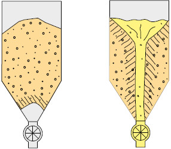
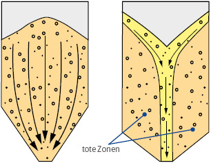
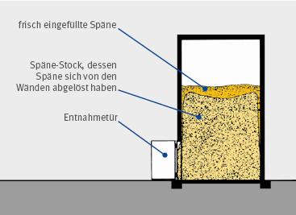
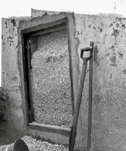

Für die Planung und den Betrieb eines Silos ist das Verhalten des Schüttgutes „Holzstaub/-späne-Gemisch“ von wesentlicher Bedeutung.
Mit dem Begriff „gute Fließfähigkeit“ wird ausgedrückt, dass ein Schüttgut leicht zum Fließen zu bringen ist. Als „nicht fließend“ werden Schüttgüter bezeichnet, die zu Auslaufstörungen neigen (z. B. durch Bildung von Brücken oder Schächten, siehe Abb. 4.1) oder sich während der Lagerung oder dem Transport verfestigen. Holzstaub/-späne-Gemische haben die Eigenschaft, dass sie sich unter Druck verfestigen und dadurch Auslaufstörungen erzeugen.

Abb. 4.1 links: Brückenbildung, rechts: Schachtbildung
Bei den Fließvorgängen von Schüttgütern in Silos unterscheidet man zwischen Massenfluss und Kernfluss (siehe Abb. 4.2). Beim Massenfluss ist beim Abzug von Schüttgut der ganze Siloinhalt in Bewegung. Im Falle von Kernfluss wird das Schüttgut in den „toten Zonen“ im Randbereich erst bei der vollständigen Entleerung des Silos oder überhaupt nicht ausgetragen.
Die häufigsten Fließprobleme in Silos für Holzstaub und -späne sind:

Abb. 4.2 links: Massenfluss, rechts: Kernfluss
In Silos mit Kernfluss entsteht dadurch eine schwankende Produktzusammensetzung an der Austragung, was die weitere Verwertbarkeit als Rohstoff bzw. Heizmaterial negativ beeinflussen kann.
Bei „Kernfluss-Silos“ können alle genannten Probleme auftreten, während bei „Massenfluss-Silos“ nur das Problem der Brücken- bzw. Dombildung berücksichtigt werden muss.
Holzstaub/-späne sowie Hackschnitzel sind nichtrieselfähiges Material. Eine lose aufgeschüttete Späne-Menge verdichtet und verfestigt sich mit der Zeit immer stärker, weil sich die einzelnen Späne unter dem Gewicht des aufliegenden Materials ineinander verflechten.
Werden große Späne-Mengen in ein Silo eingefüllt, senkt sich das Material unter dem Eigengewicht in der Mitte der Aufschüttung mehr ab als an deren Rand. Dabei lösen sich die Späne geringfügig von den Wänden ab. Der gesamte Späne-Haufen schrumpft während der Verdichtung allseitig um einen kleinen Betrag. Es bildet sich mit der Zeit ein sogenannter Späne-Stock, dessen innerer Halt ausreicht, um im Silo ohne seitliche Stützkräfte stehen zu bleiben (Abb. 4.3, 4.4).

Abb. 4.3 Bildung eines Späne-Stocks
| Entnahmeöffnung: Nach dem Öffnen der Tür bleibt die Späne-Wand bestehen |
 |
Abb. 4.4 zum Stock verfestigte Späne
Holzspäne jeglicher Art, die in Kammern oder Silos eingefüllt werden, bilden nach einiger Zeit solche Späne-Stöcke. Holzart, Feuchtigkeits- und Harzgehalt, sowie die Form der Späne beeinflussen nur den zeitlichen Ablauf der Stockbildung. Hohe Aufschüttungen verdichten sich wegen des größeren Eigengewichtes schneller als niedrigere Aufschüttungen. Im fortgeschrittenen Stadium wird der innere Zusammenhalt der Späne- Haufen so stark, dass sich Stangen und Grabwerkzeuge nur mit Mühe in den Stock stoßen lassen. Nach mehreren Monaten verfestigt sich der Stock unter Umständen derart, dass die Späne nur noch mit Werkzeugen (z. B. Pickeln) abgebaut werden können.
Werden Sägespäne oder Hackschnitzel von biologisch noch aktivem Holz – z. B. aus frisch gefällten Stämmen – in das Silo eingefüllt, so tritt ein Gärungsprozess ein. Unter Hitzeentwicklung und Abgabe von Flüssigkeit verhärtet sich das Material innerhalb weniger Wochen derart stark, dass es selbst mit Pickeln und Brechstangen nicht mehr abgebaut werden kann. Bei der Gärung werden außerdem Gase freigesetzt, die sich in einer Umgebung mit starker Erwärmung selbst entzünden und so zu einer Gasexplosion im Silo führen können. Diese Gase sind für den Menschen giftig (Kohlenmonoxid, Kohlendioxid). Nur Späne-Material von getrocknetem Holz gelangt nicht zum Gären. Erfahrungsgemäß nimmt die Gefahr von Gärungsprozessen und Selbstentzündung mit der Lagermenge und der Silogröße zu [4]. Bei großen Silos ist die Wärmeproduktionsrate innerhalb der Schüttung oft höher als die Wärmeabgaberate über die Silowände.
Holzstaub und -späne sind brennbar. Voraussetzung für einen offenen Brand ist das Überschreiten der Glimmtemperatur von etwa 250 bis 300° C. Allerdings können in Holzspäne-Schüttungen auch Glimmnester durch Selbstentzündung des gelagerten Materials entstehen. Die für die Selbstentzündung benötigten Temperaturen sind wesentlich geringer. Bereits Umgebungseinflüsse, wie Sonneneinstrahlung oder hohe Lufttemperaturen, können zur Selbstentzündung des Materials führen.
Wenn die durch chemische Oxidationsreaktionen innerhalb der Schüttung erzeugte Wärme nicht vollständig nach außen abgegeben werden kann, können Schwel- oder Glutnester entstehen, sodass sich durch die folgende Temperaturerhöhung sogenannte „Hotspots“ bilden. Feststoffschüttungen (z. B. Holzstaub und -späne) sind schlechte Wärmeleiter. Die Gefahr der Bildung von „Hotspots“ durch Überschusswärme steigt mit zunehmender Umgebungstemperatur und zunehmender Größe des Schüttvolumens (Silogröße). Bleiben diese Schwel- und Glutnester unentdeckt, können sie auch lange Zeit nach dem ersten Löscheinsatz zum Ausbruch von Folgebränden führen.
Solche Brände lassen sich innerhalb des Silos kaum vollständig löschen, da an versteckten Stellen Glimmnester verbleiben, die dann wieder Ausgangspunkt für eine erneute Anfachung des Feuers sein können. Deshalb muss der Inhalt eines einmal in Brand geratenen Silos in aller Regel vollständig aus dem Silo ausgetragen und entfernt werden.
Wenn Glimmnester von oben über die Beschickung auf die Schüttung eingetragen werden und die Sauerstoffzufuhr erhalten bleibt, können sich in der Folge auch offene Brände mit einer Temperatur von ca. 1.000° C an der Oberfläche der Schüttung entwickeln.
Explosionsfähige Atmosphäre muss bei der Lagerung größerer Mengen von Holzstaub/-späne-Gemischen in Silos immer unterstellt werden, da z. B. feuchtes Staub-/Späne-Material trocknet bzw. sich beim Befüllen Staub-/Späne-Gemische entmischen und Stäube sich unkontrolliert ablagern können.